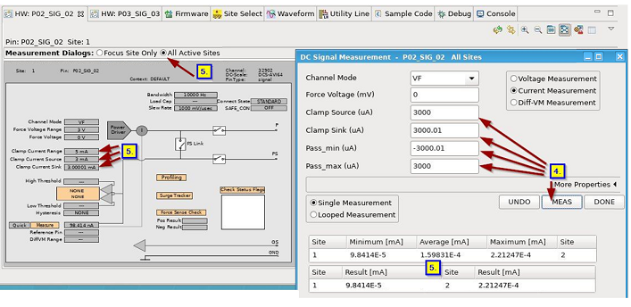
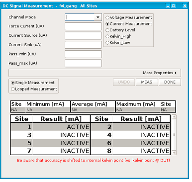
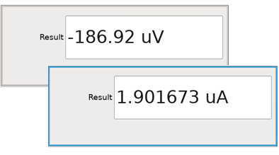

You can execute a measurement using the Hardware view.
About this task
This task explains how to make a measurement with the Hardware view. Details of using the
Hardware view to make specific measurements can be found in the following topics:
Before you begin
You have updated the hardware information in the Pin Browser view.
In the Hardware view, Link with Editor and
Selection is selected.
Procedure
-
In the Hardware view click Measure .
-
From the Measurement Dialogs options, select Focus Site
Only.
-
In the Measurement window, change measurement values as
required.
Changed values are highlighted with a turquoise background.
Values can be entered with or without units. The behaviour is summarised in the table
below.
| Text Label |
User Input |
Display after return |
| Force Voltage |
1 |
1 mV |
| 1000 |
1 V |
| 0.001 |
1 uV |
| 1 mV |
1 mV |
| 1000 mV |
1 V |
| 1005 mV |
1.005 V |
| Clamp Sink |
1 |
1 uA |
| 1000 |
1 mA |
| 0.001 |
1 nA |
| 1 mA |
1 mA |
| 1000 mA |
1 A |
| 1005 mA |
1.005 A |
-
In the Measurement window, click MEAS
The measurement is executed and the values are displayed in black on white.
Note Signals that support multisite meausrement:

You also can change measurement settings and click MEAS to generate new results.
-
From the Measurement Dialogs options, select All Active
Sites.
Measurement results are displayed as an overview in the Measurement
window. The changed values are also updated in the Hardware view.
Results
You have executed a measurement using the Hardware view. The results for all active sites are
displayed as follows:

Typical results for the site in focus are displayed as follows:
